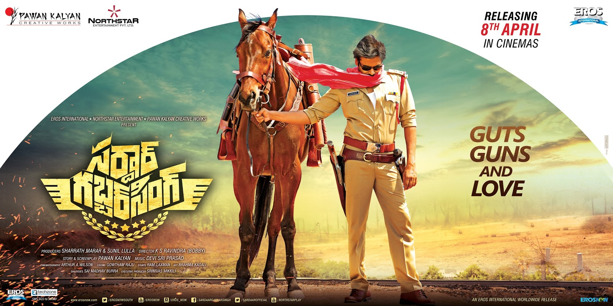

Movies
1. Akkada Ammayi Ikkada Abbayi:
Akkada Ammayi Ikkada Abbayi Movie Releases in 1996 and this his debut film in Tollywood.
Cast :Pawan Kalyan, Supriya
Director:E.V.V. Satyanarayana
Music Director:Koti
Producer:Allu Aravind
2. Gokulamlo Seetha:
Gokulamlo Seetha Released in 1997
Cast :Pavan Kalyan, Raasi
Director:Muthyala Subbaiah
Music Director:Koti
Producer:G.V.G. Raju
3.Suswagatham:
Suswagatham Film also released in the year 1997
Cast :Pavan Kalyan, Devayani
Director:Bheemineni Sreenivasa Rao
Music Director:SA. Rajkumar
Producer:R.B. Choudary
4.Tholi Prema:
Tholi Prema Movie Released in 1999
Cast :Pavan Kalyan,Keerthi Reddy
Director:A.Karunakaran
Music Director:Deva
Producer:GVG Raju
5.Thammudu:
Thammudu movie released in the year 1999
Cast :Pawan Kalyan, Preity Zingania
Director:P.A. Arun Prasad
Music Director:Ramana Gogula
Producer:Smt Muniswari
6.Badri:
Badri movie released in 2000
Cast:Pawan Kalyan, Amisha Patel, Renu Desai
Director:Puri Jagannath
Music Director:Ramana Gogula
Producer:T Trikrama Rao
7.Kushi:
Kushi film released in 2001
Cast:Pawan Kalyan, Bhumika Chawla
Director:SJ Surya
Music Director:Mani Sharma
Producer:AM Ratnam
8.Johny:
Johny film released in 2003
Cast:Pawan Kalyan, Renu Desai
Director:Pawan Kalyan
Music Director:Ramana Gogula
Producer:Allu Arvind
9.Gudumba Shankar:
Gudumba Shankar film released in 2004
Cast:Pavan Kalyan, Meera Jasmine
Director:Veerashankar
Music Director:Mani Sharma
Producer:Nagababu
10.Balu ABCDEFG:
Balu ABCDEFG released in 2004
Cast:Pawan Kalyan, Shreya ,Neha Oberoi
Director:A.Karunakaran
Music Director:Mani Sharma
Producer:Aswini Dutt
11.Bangaram:
Bangaram released in 2006
Cast:Pawan Kalyan, Meera Chopra
Director:Dharani
Music Director:Vidya Sagar
Producer:AM Ratnam
12.Annavaram:
Annavaram released in 2006
Cast:Pawan Kalyan, Asin, Sandhya
Director:Bheemineni Srinivasarao
Music Director:Ramana Gogula
Producer:NV Prasad, Paras Jain
13.Jalsa:
Jalsa released in 2008
Cast:Pawan Kalyan, Ileana, Parvathi Melton, Kamalini Mukherjee
Director: Trivikram Srinivas
Music Director:Devi Sri Prasad
Producer:Allu Aravind
14.Komaram Puli:

Komaram Puli (Puli) released in 2010.
Cast:Pawan Kalyan, Nikesha Patel and Shriya Saran
Director:S J Surya
Music Director:A R Rahman
Producer:Singanamala Ramesh
15.Theen Maar:
Theen Maar film released in 2011
Cast: Power Star Pawan Kalyan, Trisha and kriti kharbanda
Director: Jayant C Paranji
Music Director: Mani Sharma
Producer:Bandla Ganesh Babu
16. Panja:
Panja film also released in 2011
Cast:Pawan Kalyan,Sarah Jane Dias and Anjali Lavania
Director:Vishnuvardhan
Music Director:Yuvan Shankar Raja
Producer:Sanghamitra arts and Arks Media Banners
17. Gabbar Singh:
Gabbar Singh Movie Released in 2012
Cast:Pawan Kalyan and Shruti Haasan
Director:Harish Shankar
Music Director:Devi Sri Prasad
Producer:Bandla Ganesh Babu
18. Cameraman Gangatho Rambabu:

Cameraman Gangatho Rambabu Movie also released in 2012
Cast:Pawan Kalyan and Tamanna
Director:Puri Jagannath
Music Director:Mani Sharma
Producer:DVV Danayya
19. Attarintiki Daredi:
Cast:Pawan Kalyan, Samantha and Praneetha
Director:Trivikram Srinivas
Music Director:Devi Sri Prasad
Producer:BVSN Prasad
Attarintiki Daredi released in 2013 and turned super hit at box-office.
20. Gopala Gopala (Oh My God)
This film in Telugu titled as Gopala Gopala and it is a remake of Hindi film Oh My God and this flick released in 2015.
Cast:Pawan Kalyan, Samantha and Praneetha
Director:Trivikram Srinivas
Music Director:Devi Sri Prasad
Producer:BVSN Prasad
21. Sardaar-Gabbar Singh
Cast:Pawan Kalyan, Kajal
Director:Bobby (KS Ravindra)
Music Director:Devi Sri Prasad
Producer:BVSN Prasad
22. Katamarayudu
Cast:Pawan Kalyan,
Director:Kishore Kumar Pradasani
Music Director:Devi Sri Prasad
Producer:Sharat Marar
23. Agnyaathavaasi
Cast:Pawan Kalyan,Keerthi Suresh
Director:Trivikram Srinivas
Music Director:Anirudh Ravichander
Producer:S Radha Krishna
24. Vakeel Saab
Cast:Pawan Kalyan,Nivetha Thomas ,Anjali,Ananya Nagalla,Shruti Haasan,
Director:Venu Sriram
Music Director:Thaman s
Producer: Dil Raju
25.Bheemla Nayak
Cast:Pawan Kalyan,Nithya Menen
Director:Saagar K Chandra
Music Director:Thaman s
Producer: Dil Raju
26. Bro
Cast:Pawan Kalyan,Sai Dharam Tej,Vinodhaya Sitham
Director:Samuthirakani
Music Director:Thaman s
Producer:TG Vishwa Prasad